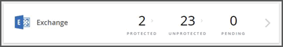
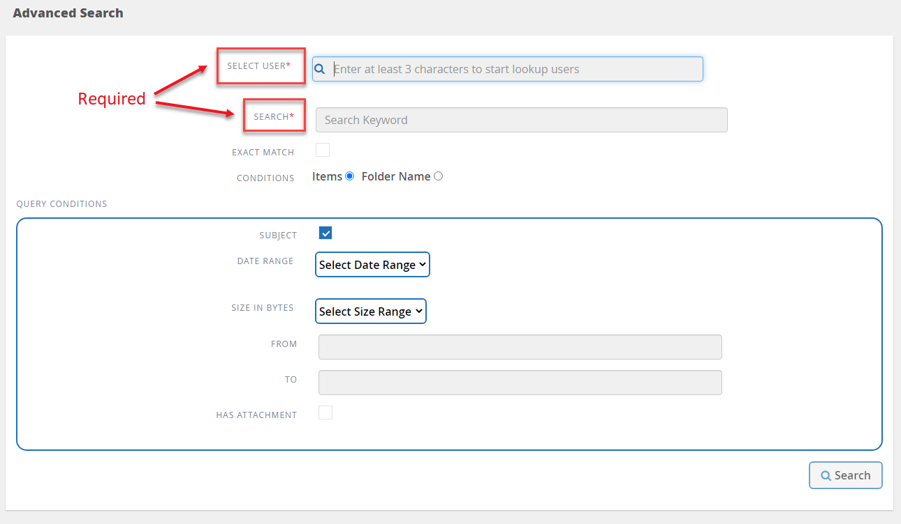
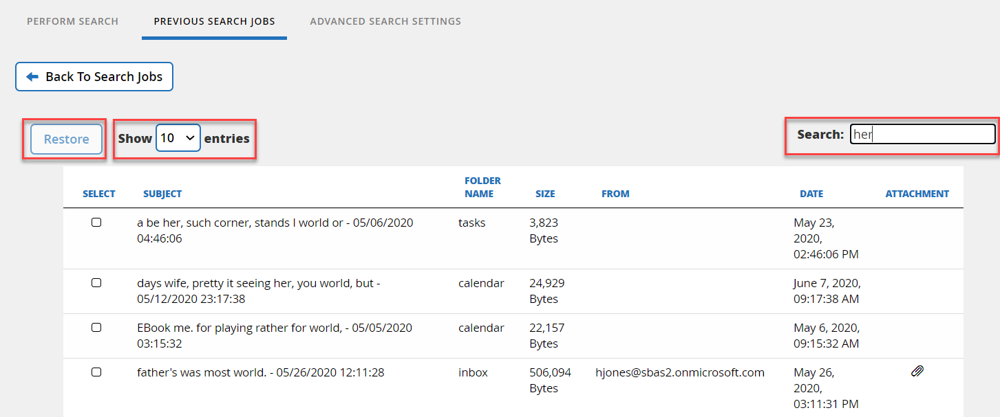

検索の実行
寄稿者
 このページのPDFをダウンロード
このページのPDFをダウンロード
Microsoft Exchange Online、Microsoft OneDrive for Business、およびMicrosoft SharePoint Onlineのインライン検索を使用して、特定のコンテンツを見つけることができます。
Microsoft ExchangeOnlineの検索オプション
インライン検索または詳細検索を実行できます。
Microsoft ExchangeOnline内でインライン検索を実行する
特定のコンテンツについて、個々のメールボックス内でインライン検索を実行できます。これは、Office365グループの一部であるメールボックスにも当てはまります。
ダッシュボードから、[Exchange]ボックスの[保護]または[保護されていない]の上にある番号をクリックします。
-
保護されたメールボックスを検索している場合は、検索を実行する必要がある電子メールアドレスをクリックします。
検索する必要のあるカテゴリ（メール、タスク、連絡先、カレンダー、またはその他）を選択します。
検索フィールドに検索文字列を入力します。
検索は自動的に実行され、検索文字列を入力すると結果が表示されます。
-
保護されていないメールボックスを検索する場合は、検索するメールボックスを選択します。
検索フィールドに検索文字列を入力します。
検索は自動的に実行され、検索文字列を入力すると結果が表示されます。
Microsoft ExchangeOnlineの高度な検索の使用
個別または共有のメールボックスアイテムを検索して、これらのアイテムを元のメールボックスに復元できます。この設定を有効にするには、2020年6月の新機能とアップデートのリリースノートを参照してください。
高度な検索設定の設定
詳細検索設定では、ユーザーは検索機能を有効または無効にすることができます。
| ライセンスを取得したユーザーとライセンスを取得していないユーザーは、有効になっている場合、高度な検索機能を使用できます。 |
ダッシュボードから、左側のメニューの[高度な検索]をクリックします。
-
[検索の詳細設定]をクリックします。
デフォルトでは、リストにはすべてのライセンスユーザーが表示されます。 [すべてのユーザーを表示]と[ライセンスユーザーのみを表示]を切り替えて、リスト内のユーザータイプをフィルタリングします。
検索ツールを使用し、少なくとも3文字を入力して、一意のユーザーを検索します。
詳細設定を開いて、アーカイブメールボックスアイテムの検索を有効にします。
 。
。
ユーザーを有効にするには、[高度な検索]列で[オン]を選択します。
次回、その有効なユーザーを完全バックアップまたは増分バックアップで保護するときに、新しい電子メールアイテムの検索を実行できます。設定への変更を保存するには、[設定の保存]をクリックします。
有効なユーザーをバックアップするには、バックアップのスケジュールまたはバックアップ頻度の変更に移動し、 [ユーザー]タブにとどまってバックアップするユーザーを選択します。
検索の実行
高度な検索は、ユーザーが検索を実行するの下で、元のメールボックスにこれらの項目を個別または共有メールボックスアイテムの検索を実行し、復元するオプションを提供します。
ダッシュボードから、左側のメニューの[高度な検索]をクリックします。
[検索の実行]をクリックします。
-
赤いアスタリスクを使用して、必須フィールドに情報を入力します。
オプションフィールド：条件とクエリ条件。
ユーザーの選択*：ユーザーの名前に少なくとも3文字を入力して、選択するユーザーを見つけます。
検索*：キーワードに3文字以上入力してください。フレーズを検索する場合は、フレーズ内の単語を引用符で囲みます（例：「Helloworld」）。単語を個別に検索できる場合は、引用符は必要ありません。
完全一致：完全一致のキーワードのみを検索する場合に選択します。
-
条件：
アイテム：アイテムを選択して、メールボックス内のすべてのアイテムを検索します。
フォルダ名：フォルダ名を選択して、メールボックス内の特定のフォルダ内のアイテムを検索します。表示されたテキストボックスにフォルダ名を入力します。
日付範囲：日付範囲のドロップダウンメニューから、[過去7日間]または[カスタム範囲]を選択して、検索の開始日と終了日を入力します。
バイト単位のサイズ：[バイト単位のサイズ]ドロップダウンメニューから、[より大きい] （>）または[より小さい（<） ]を選択します。次に、サイズをバイト単位で入力します。
差出人：送信者のメールアドレスを入力します。
宛先：受信者のメールアドレスを入力します。
件名：件名のみで検索する場合に選択します。
添付ファイルあり：メールアイテムに添付ファイルがあるかどうかを選択します。
[検索]をクリックします。
検索ジョブを見つけるには、以下の「以前の検索ジョブの検索」に進んでください。
以前の検索ジョブの検索
高度な検索により、ユーザーは[以前の検索ジョブ]で以前の検索ジョブを検索できます。
ダッシュボードから、左側のメニューの[高度な検索]をクリックします。
[前の検索ジョブ]をクリックします。
以前に実行した検索ジョブを見つけます。
検索結果がゼロの場合は、検索に入力した条件を満たすアイテムがないことを意味します。検索結果の総数をクリックして表示します。
-
結果表示ビューでは、ドロップダウンメニューを表示＃エントリを使用して示してどのように多くのエントリを選択するか、または結果をさらに絞り込むために検索し、アイテムを復元することができます。

復元されたアイテムは、命名規則CC_search_MM.DD_timeを使用して元のメールボックスに戻ります。復元ジョブを見つけるには、左側のメニューの[ジョブ]に移動します。 検索の結果表示を終了するには、[検索ジョブに戻る]をクリックします。
Microsoft OneDrive forBusiness内の検索
特定のコンテンツについて、個々のMySite内でインライン検索を実行できます。
ダッシュボードから、[OneDriveで保護されている]ボックスの上の番号をクリックします。
検索を実行する必要があるMySiteをクリックします。
検索する必要のあるファイルをクリックします。
検索フィールドに検索文字列を入力します。
検索は自動的に実行され、検索文字列を入力すると結果が表示されます。
Microsoft SharePointOnline内の検索
特定のコンテンツについて、個々のMySite内でインライン検索を実行できます。これは、Office365グループの一部であるサイトにも当てはまります。
ダッシュボードから、[SharePointで保護されている]ボックスの上の番号をクリックします。
検索を実行する必要があるサイトをクリックします。
検索する必要のあるコンテンツカテゴリをクリックします。
検索フィールドに検索文字列を入力します。
検索は自動的に実行され、検索文字列を入力すると結果が表示されます。
 Edit on GitHub
Edit on GitHub